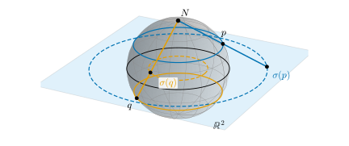
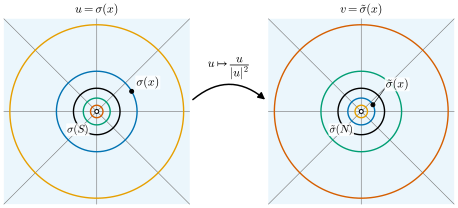
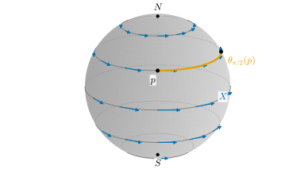
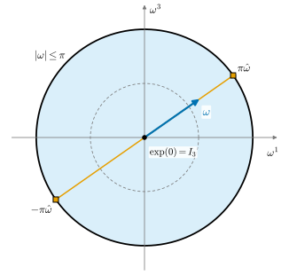

0.6 Manifolds: Spaces That Look Flat Up Close
Goals
- chart와 atlas로 manifold를 정의하는 생각을 설명하고, sphere \(S^2\)의 두 stereographic projection 사이의 transition map을 계산할 수 있다.
- tangent space와 differential이 chart 위에서는 Jacobian matrix라는 것, 그리고 chain rule이 backpropagation과 같은 계산이라는 것을 설명할 수 있다.
- vector field와 그 flow를 그림으로 설명할 수 있다.
- \(\RP^2\)와 \(\mathrm{SO}(3)\)가 manifold인 이유와, 이것이 homogeneous coordinates와 카메라 자세에서 왜 중요한지 말할 수 있다.
Prerequisites
- Section 0.3: surface의 parametrization(Definition 0.3.1)과 tangent plane(Definition 0.3.3)
- Section 0.5: Theorema Egregium(Theorem 0.5.1). surface의 기하는 surface 안에서 잴 수 있다.
- 학부 미적분: partial derivative, Jacobian matrix, chain rule. 깊이 보려면 Definition 2.1.10 (Jacobian matrix)과 Theorem 2.2.1 (chain rule)
- 행렬의 곱, transpose, determinant
Motivation
Section 0.5에서 Gaussian curvature는 surface 안에서 잰 길이와 각만으로 정해진다는 것(Theorema Egregium)을 보았다. surface 위의 기하는 바깥 공간 \(\R^3\)을 보지 않고도 할 수 있다는 뜻이다. 그렇다면 처음부터 바깥 공간 없이 “surface 같은 공간”을 정의할 수는 없을까?
컴퓨터비전에는 이런 공간이 흔하다. 카메라가 놓일 수 있는 모든 방향(orientation), 곧 rotation matrix 전체는 \(\mathrm{SO}(3)\)를 이룬다. 행렬 성분은 9개지만 자유도는 3이다. 이미지 평면에 “무한히 먼 점”까지 더한 projective plane \(\RP^2\)는 원점을 지나는 직선들의 모임이어서, 처음부터 어떤 \(\R^N\) 안에 놓인 surface로 주어지지 않는다. 이 공간들의 공통점은 단 하나, 가까이서 보면 \(\R^n\)처럼 보인다는 것이다(Section 0.1의 “확대하면 평평하다”).
지구를 생각해 보자. 세계지도첩(atlas)의 각 장은 지구의 일부를 평면에 그린 것이고, 이웃한 두 장이 겹치는 곳에는 “이 지도의 이 점은 저 지도의 저 점”이라는 대응이 있다. 지구 전체를 한 장에 빈틈없이 담을 수는 없지만, 여러 장을 모으면 지구 전체를 덮는다. manifold는 바로 이렇게 정의한다.
Charts and Atlases
공간 \(M\)의 일부 \(U\)에 좌표 \((x^1, \dots, x^n)\)을 붙이는 일대일 대응 \(\varphi\colon U \to \R^n\)을 chart(차트)라 하고, \(M\)을 덮는 chart들의 모임을 atlas(아틀라스)라 한다. 두 chart \(\varphi\), \(\psi\)가 겹치는 곳에서는 같은 점이 두 좌표를 가진다. 한 좌표에서 다른 좌표로 바꾸는 map \(\psi \circ \varphi^{-1}\)을 transition map(좌표변환)이라 한다. transition map은 \(\R^n\)의 open set 사이의 보통 map이므로 미적분을 쓸 수 있다.
Definition 0.6.1 (smooth manifold, simplified). \(n\)-dimensional smooth manifold(매끄러운 다양체) \(M\)은 다음을 갖춘 공간이다.
- (1) chart \((U, \varphi)\)들: \(U\)는 \(M\)의 open set이고, \(\varphi\colon U \to \varphi(U)\)는 \(\R^n\)의 open set 위로 가는 일대일 대응으로서 연속이고 역도 연속이다(homeomorphism).
- (2) chart의 \(U\)들이 \(M\) 전체를 덮는다.
- (3) 두 chart \((U, \varphi)\), \((V, \psi)\)가 겹치는 곳에서 transition map
\[ \psi \circ \varphi^{-1}\colon \varphi(U \cap V) \to \psi(U \cap V) \tag{0.6.1} \]이 smooth(\(C^\infty\))다.
여기서는 단순화했다. 정확한 정의에서는 \(M\)이 Hausdorff이고 second countable인 topological space여야 하고, atlas를 하나 고르는 대신 그것이 정하는 maximal atlas, 곧 smooth structure(매끄러운 구조)를 준다 (Definition 11.1.3, Definition 11.2.9).
조건 (3)이 핵심이다. 함수 \(f\colon M \to \R\)이 매끄럽다는 것을 “어떤 chart로 옮긴 \(f \circ \varphi^{-1}\)이 매끄럽다”로 정의하고 싶다. 다른 chart \(\psi\)로 옮긴 것은 \(f \circ \psi^{-1} = (f \circ \varphi^{-1}) \circ (\varphi \circ \psi^{-1})\)이므로, transition map이 매끄러우면 어느 chart로 판정해도 답이 같다. 좌표는 우리가 붙인 것이지만, smoothness는 좌표에 무관한 \(M\)의 성질이 된다.
Example 0.6.2 (sphere \(S^2\) and stereographic projection). unit sphere \(S^2 = \{(x, y, z) : x^2 + y^2 + z^2 = 1\}\)의 북극을 \(N = (0, 0, 1)\), 남극을 \(S = (0, 0, -1)\)이라 하자. \(N\)에서 \(S^2\)의 점 \(p\)를 지나는 직선이 평면 \(z = 0\)과 만나는 점을 \(\sigma(p)\)라 하면(Figure 0.6.1)
\[ \sigma(x, y, z) = \frac{(x, y)}{1 - z}, \qquad \tilde\sigma(x, y, z) = \frac{(x, y)}{1 + z} \]
이다. \(\sigma\)를 북극에서의 stereographic projection(입체사영)이라 하고, \(\tilde\sigma\)는 남극에서 같은 방법으로 projection한 것이다. \(\sigma\)는 \(S^2 \setminus \{N\}\)에서, \(\tilde\sigma\)는 \(S^2 \setminus \{S\}\)에서 \(\R^2\) 위로 가는 chart이고, 둘을 합치면 \(S^2\)를 덮는다. 두 chart가 겹치는 곳 \(S^2 \setminus \{N, S\}\)에서 transition map은
이다(Figure 0.6.2). 분모가 \(0\)이 아닌 유리함수이므로 매끄럽고, 따라서 \(\{\sigma, \tilde\sigma\}\)는 \(S^2\)의 atlas다. (계산은 Proposition 11.3.1.)
chart 하나로는 \(S^2\) 전체를 덮을 수 없다. \(S^2\)는 compact(bounded closed set)이고 compact성은 homeomorphism으로 옮겨 가는데, \(\R^2\)의 공집합이 아닌 open set은 compact가 아니기 때문이다(Non-example 11.3.8, Example 0.3.2와 같은 이유). 이 사실은 뒤의 Euler angle에서 다시 나온다.
Verification: verify/v-0-6-manifolds.py


Example 0.6.3 (torus \(T^2\)). torus \(T^2 = S^1 \times S^1\)의 점은 두 각 \((s, t)\)로 쓸 수 있다. 각은 \(2\pi\)의 정수배만큼 모호하므로, 성분마다 길이 \(2\pi\)인 열린 구간에서 각을 고르면 chart가 된다. 구간을 바꾸는 transition map은 각에 \(2\pi\)의 정수배를 더할 뿐이므로 매끄럽다. \(\R^3\) 안의 torus of revolution \(T_{R,r}\)은 \(T^2\)와 smooth manifold로서 같다(Example 12.2.8). manifold는 어디에 놓였는지가 아니라 chart로 정해진다.
Example 0.6.4 (real projective plane \(\RP^2\)). real projective plane(실사영평면) \(\RP^2\)는 \(\R^3\)에서 원점을 지나는 직선 전체의 모임이다(Definition 3.4.11). \(0\)이 아닌 벡터 \((x, y, w)\)가 정하는 직선을 \([x : y : w]\)로 쓰고 homogeneous coordinates(동차좌표)라 한다. \(\lambda \ne 0\)이면 \([x : y : w] = [\lambda x : \lambda y : \lambda w]\)이다. \(w \ne 0\)인 점들의 집합 \(U_3\)에서
이다. 첫 식이 chart이고, 대표를 \(\lambda\)배 해도 값이 같으므로 잘 정의된다. \(\varphi_1\)(\(x \ne 0\)인 곳), \(\varphi_2\)(\(y \ne 0\)인 곳)도 같은 방식으로 정의하며, 두 번째 식처럼 transition map은 분모가 \(0\)이 아닌 곳에서 유리함수이므로 매끄럽다. 세 chart가 \(\RP^2\)를 덮으므로 \(\RP^2\)는 2-dimensional smooth manifold다(Proposition 11.4.1).
Verification: verify/v-0-6-manifolds.py
Smooth Maps and Diffeomorphisms
manifold 사이의 map \(F\colon M \to N\)은 chart로 옮겨 판정한다. \(p\) 둘레의 chart \(\varphi\)와 \(F(p)\) 둘레의 chart \(\psi\)를 고르면 \(\hat F = \psi \circ F \circ \varphi^{-1}\)은 \(\R^m\)의 open set에서 \(\R^n\)으로 가는 보통 map이다(\(m = \dim M\), \(n = \dim N\)). 모든 점에서 이것이 매끄러우면 \(F\)를 smooth map(매끄러운 사상)이라 한다. 조건 (3) 덕분에 어느 chart로 판정해도 같다. smooth map이 일대일 대응이고 역도 smooth map이면 diffeomorphism(미분동형사상)이라 한다. diffeomorphic한 두 manifold는 smooth manifold로서 같은 것이다.
“일대일 대응이고 매끄럽다”만으로는 부족하다. \(f(x) = x^3\)은 \(\R\)에서 \(\R\)로 가는 smooth map이고 일대일 대응이지만 역 \(x^{1/3}\)이 \(0\)에서 미분가능하지 않으므로 diffeomorphism이 아니다(Non-example 2.3.3).
Tangent Spaces and Differentials
\(S^2\)처럼 \(\R^3\) 안에 있는 manifold라면 \(p\)에서의 tangent space는 Section 0.3의 tangent plane \(\{v : \inner{v}{p} = 0\}\)이다. 바깥 공간이 없는 \(M\)에서는 tangent vector를 어디에 그려야 할까? 답은 “\(p\)를 지나는 곡선의 velocity”다. 곡선 \(\gamma\)가 \(\gamma(0) = p\)이면, chart \(\varphi\)로 옮긴 곡선 \(\varphi \circ \gamma\)는 \(\R^n\)의 곡선이므로 velocity \(v = (\varphi \circ \gamma)'(0) \in \R^n\)이 있다. 이 \(v\)를 chart \(\varphi\)에 대한 tangent vector의 성분으로 본다. 다른 chart \(\psi\)를 쓰면 성분은 transition map의 Jacobian matrix만큼 바뀐다. chain rule에 의해
이기 때문이다. 성분은 chart마다 다르지만 서로 정해진 규칙으로 바뀌므로, 성분들이 가리키는 “하나의 tangent vector”를 생각할 수 있다.
Definition 0.6.5 (tangent space and differential, simplified). \(p \in M\)을 지나는 곡선들의 velocity 전체를 tangent space(접공간) \(T_pM\)이라 한다. 두 곡선의 velocity는 한 chart에서 성분이 같을 때 같다고 본다. \(T_pM\)은 \(n\)-dimensional vector space다. smooth map \(F\colon M \to N\)의 \(p\)에서의 differential(미분) \(dF_p\colon T_pM \to T_{F(p)}N\)은 곡선의 velocity를 그 곡선의 image의 velocity로 보내는 linear map이다: \(dF_p\big(\gamma'(0)\big) = (F \circ \gamma)'(0)\). chart로 성분을 쓰면 \(dF_p\)는 \(\hat F = \psi \circ F \circ \varphi^{-1}\)의 Jacobian matrix \(D\hat F(\varphi(p))\)다.
여기서는 tangent vector를 곡선의 velocity로 단순화했다. 공식 정의는 함수를 미분하는 연산(derivation)으로 하고, 두 정의가 같음을 Chapter 13에서 보인다(Section 13.2, Section 13.5).
differential의 가장 중요한 성질은 chain rule이다. smooth map \(F\colon M \to N\), \(G\colon N \to P\)에 대하여
이다. chart로 쓰면 이것은 Jacobian matrix의 곱 \(D(\hat G \circ \hat F) = D\hat G \cdot D\hat F\)이며, 곡선 \(\gamma\)를 \(F\)로 보낸 뒤 \(G\)로 보내는 것과 한 번에 \(G \circ F\)로 보내는 것이 같다는 말이다. tangent vector는 differential을 따라 앞으로 밀려 간다(push forward).
Vector Fields and Flows
각 점 \(p\)에 tangent vector \(X_p \in T_pM\)을 매끄럽게 하나씩 붙인 것을 vector field(벡터장)라 한다. 바람의 지도처럼, 점마다 “어느 쪽으로 얼마나 빨리 흘러가는지”를 정한 것이다. 곡선 \(\gamma\)가 모든 시각에 \(\gamma'(t) = X_{\gamma(t)}\)를 만족하면 \(X\)의 integral curve(적분곡선)라 한다. chart에서 이것은 ordinary differential equation이므로, 각 점에서 출발하는 integral curve가 적어도 짧은 시간 동안 존재하고 하나뿐이다(Theorem 2.7.6). 모든 점을 동시에 시간 \(t\)만큼 흘려보내는 map \(\theta_t\colon p \mapsto\)(\(p\)에서 출발한 integral curve의 시각 \(t\)의 점)을 \(X\)의 flow(흐름)라 한다. \(\theta_s \circ \theta_t = \theta_{s+t}\)이고, 각 \(\theta_t\)는 diffeomorphism이다. 여기서는 \(\theta_t\)가 모든 \(t\)에서 정의된다고 단순화했다. compact manifold 위에서는 늘 그렇지만, 일반적으로는 짧은 시간에만 정의될 수 있다(Section 15.4).
Example 0.6.6 (rotation vector field on \(S^2\)). \(X(x, y, z) = (-y, x, 0)\)은 \(\inner{X(p)}{p} = 0\)이므로 \(S^2\)의 vector field다. integral curve는 circle of latitude이고, flow \(\theta_t\)는 \(z\)축 둘레로 각 \(t\)만큼 돌리는 회전이다(Figure 0.6.3). 실제로 \(\theta_t(p) = R_z(t)p\)를 \(t\)로 미분하면 \(X(\theta_t(p))\)가 된다. \(X\)는 두 극에서 \(0\)이다.
Verification: verify/v-0-6-manifolds.py

두 vector field의 flow를 번갈아 따라가면 제자리로 돌아오지 않을 수 있다. 그 어긋남을 재는 것이 Lie bracket(리 괄호) \([X, Y]\)이다(Section 15.2).
Lie Groups: Rotations as a Manifold
manifold이면서 group이고, 곱과 역원이 smooth map인 것을 Lie group(리 군)이라 한다. invertible \(n \times n\) 행렬 전체 \(\GL(n, \R)\)은 \(\R^{n^2}\)의 open set이므로 manifold이고 행렬 곱으로 Lie group이 된다(Example 11.4.8). 컴퓨터비전에서 가장 중요한 Lie group은 회전 전체다.
Example 0.6.7 (the rotation group \(\mathrm{SO}(3)\)). \(\mathrm{SO}(3) = \{R \in \R^{3 \times 3} : R^{\mathsf T} R = I_3,\ \det R = 1\}\)이라 하자.
- dimension. \(R^{\mathsf T}R\)은 symmetric이므로 \(R^{\mathsf T}R = I_3\)은 독립인 방정식 \(6\)개이고, 성분 \(9\)개에서 빼면 \(\mathrm{SO}(3)\)는 \(3\)차원 manifold다(정확히는 regular value theorem, Section 14.4). 성분이 모두 \([-1, 1]\)에 있고 닫힌 조건으로 정해지므로 compact다.
- tangent space at \(I_3\). \(R(0) = I_3\)인 곡선 \(R(t)\)에 대해 \(R(t)^{\mathsf T}R(t) = I_3\)을 미분하면 \(R'(0)^{\mathsf T} + R'(0) = 0\)이다. 따라서 \(T_{I_3}\mathrm{SO}(3)\)은 skew-symmetric matrix(반대칭행렬) 전체 \(\mathfrak{so}(3)\)이고, 이것은 벡터 \(\omega \in \R^3\)과 일대일로 대응한다:
- exponential map(지수사상). 행렬 지수 \(\exp([\omega]_\times) = \sum_{k \ge 0} [\omega]_\times^k/k!\)는 축 \(\omega/\abs{\omega}\) 둘레로 각 \(\abs{\omega}\)만큼 돌리는 회전이고, \(\omega \ne 0\)일 때 Rodrigues formula로 계산된다(\(\omega = 0\)이면 \(I_3\)):
모든 회전은 \(\abs{\omega} \le \pi\)인 어떤 \(\omega\)의 \(\exp\)다. \(\abs{\omega} \lt \pi\)에서는 \(\exp\)가 일대일이고 그 역 \(\log\)도 매끄럽다(Section 0.8의 평균 회전에서 쓴다). \(\abs{\omega} = \pi\)이면 \(\pm\omega\)가 같은 회전을 준다(Figure 0.6.4). 곡선 \(t \mapsto \exp(t[\omega]_\times)\)는 \(I_3\)에서 velocity \([\omega]_\times\)로 출발해 같은 축 둘레로 일정하게 도는 회전들이고, 이런 곡선을 one-parameter subgroup(일매개변수 부분군)이라 한다.
Verification: verify/v-0-6-manifolds.py

Summary
- manifold는 chart들로 덮인 공간이고, chart 사이의 transition map이 매끄럽다. 그래서 바깥 공간 없이도 미적분을 할 수 있다.
- \(S^2\)는 두 stereographic projection으로 덮이고 transition map은 \(u \mapsto u/\abs{u}^2\)다. compact manifold는 chart 하나로 덮을 수 없다.
- \(\RP^2\)의 chart \(\varphi_3[x : y : w] = (x/w, y/w)\)는 homogeneous coordinates의 dehomogenization이고, homography는 \(\RP^2\)의 diffeomorphism이다.
- tangent vector는 곡선의 velocity이고, differential \(dF_p\)는 chart 위에서 Jacobian matrix다. chain rule (0.6.5)은 backpropagation의 수학이다.
- vector field는 flow를 만든다. \(\mathrm{SO}(3)\)는 3차원 Lie group이고, \(T_{I_3}\mathrm{SO}(3) = \mathfrak{so}(3)\)에서 Rodrigues formula (0.6.7)로 회전을 만든다.
다음 절에서는 tangent vector를 “재는” 대상인 covector를 다룬다. gradient가 differential과 반대 방향으로 끌려오는 이유, 그리고 covector를 넓이와 부피로 넓힌 differential form과 Stokes's theorem이 주제다.
Quick check
Exercise 0.6.1 ★ unit circle \(S^1\)의 stereographic projection은 \(\sigma(x, y) = x/(1 - y)\), \(\tilde\sigma(x, y) = x/(1 + y)\)다. 점 \((3/5, 4/5)\)에서 두 값을 구하고, transition map이 \(u \mapsto 1/u\)임을 이 점에서 확인하여라.
Solution
\(\sigma = (3/5)/(1/5) = 3\), \(\tilde\sigma = (3/5)/(9/5) = 1/3\)이다. \(1/3 = 1/u\) (\(u = 3\))이므로 맞다. (0.6.2)에서 \(n = 1\)이면 \(u/\abs{u}^2 = 1/u\)다.
Verification: verify/v-0-6-manifolds.py
Exercise 0.6.2 ★ (a) \([2 : 4 : 2]\)와 \([1 : 2 : 1]\)은 \(\RP^2\)의 같은 점인가? chart \(\varphi_3\)으로 좌표를 구하여라. (b) \([1 : 2 : 0]\)은 어느 chart에 들어가는가? 그 chart에서의 좌표는?
Solution
(a) \([2 : 4 : 2] = [2 \cdot 1 : 2 \cdot 2 : 2 \cdot 1]\)이므로 같은 점이다. 실제로 \(\varphi_3\)은 둘 다 \((2/2, 4/2) = (1/1, 2/1) = (1, 2)\)를 준다. (b) 마지막 성분이 \(0\)이므로 \(U_3\)에는 없다(이미지 평면의 point at infinity). 첫 성분이 \(0\)이 아니므로 \(U_1\)에 있고, \(\varphi_1[x : y : w] = (y/x, w/x)\)에서 좌표는 \((2, 0)\)이다.
Verification: verify/v-0-6-manifolds.py
Exercise 0.6.3 ★ \(z\)축 둘레로 각 \(t\)만큼 돌리는 회전 \(R_z(t)\)는 \(\mathrm{SO}(3)\)의 곡선이다(Example 0.6.6의 flow). \(R_z'(0)\)을 구하고 skew-symmetric matrix \([\omega]_\times\)로 쓸 때 \(\omega\)를 구하여라. 참인지 거짓인지도 판별하여라: “Euler angle을 잘 고르면 \(\mathrm{SO}(3)\) 전체를 덮는 chart 하나를 얻는다.”
Solution
\(R_z(t) = \begin{pmatrix} \cos t & -\sin t & 0 \\ \sin t & \cos t & 0 \\ 0 & 0 & 1 \end{pmatrix}\)을 \(t = 0\)에서 미분하면 \(R_z'(0) = \begin{pmatrix} 0 & -1 & 0 \\ 1 & 0 & 0 \\ 0 & 0 & 0 \end{pmatrix} = [e_3]_\times\)이므로 \(\omega = e_3 = (0, 0, 1)\)이다. \(z\)축 둘레의 단위 속도 회전이다. 명제는 거짓이다. 그런 chart가 있다면 compact인 \(\mathrm{SO}(3)\)가 \(\R^3\)의 open set과 homeomorphic이 되는데, 공집합이 아닌 \(\R^3\)의 open set은 compact가 아니다. 그래서 어떤 각 순서를 쓰든 일대일이 아니거나 rank가 떨어지는 점(gimbal lock)이 생긴다. \(\R^3\)의 open set에서 \(\mathrm{SO}(3)\) 전체로 가는 일대일이고 rank가 늘 \(3\)인 표현이 있다면, 그 역이 바로 그런 chart가 되기 때문이다.
Verification: verify/v-0-6-manifolds.py
Exercise 0.6.4 ★ \(F(x, y) = (x^2, xy)\), \(G(u, v) = u + v\)라 하자. \(D(G \circ F)(1, 2)\)를 chain rule (0.6.5)로 구하고, \(G \circ F\)를 직접 미분한 값과 비교하여라. forward mode로 \(e_1 = (1, 0)\)을 밀어 보낸 \(DF(1,2)\,e_1\)과 reverse mode로 끌어온 \(DG \cdot DF(1, 2)\)는 각각 무엇인가?
Solution
\(DF(1, 2) = \begin{pmatrix} 2x & 0 \\ y & x \end{pmatrix}_{(1,2)} = \begin{pmatrix} 2 & 0 \\ 2 & 1 \end{pmatrix}\), \(DG = \begin{pmatrix} 1 & 1 \end{pmatrix}\)이므로 \(D(G \circ F)(1, 2) = \begin{pmatrix} 4 & 1 \end{pmatrix}\)이다. 직접 미분하면 \(G \circ F = x^2 + xy\)이고 partial derivative는 \((2x + y, x) = (4, 1)\)이므로 같다. forward mode의 JVP는 \(DF(1, 2)\,e_1 = (2, 2)\)이고, 여기에 \(DG\)를 곱하면 \(4\)(\(x\) 방향 미분)가 된다. reverse mode의 VJP는 행벡터 \(\begin{pmatrix} 1 & 1 \end{pmatrix}\)을 끌어온 \(\begin{pmatrix} 4 & 1 \end{pmatrix}\)이고, 두 partial derivative를 한 번에 준다.
Verification: verify/v-0-6-manifolds.py